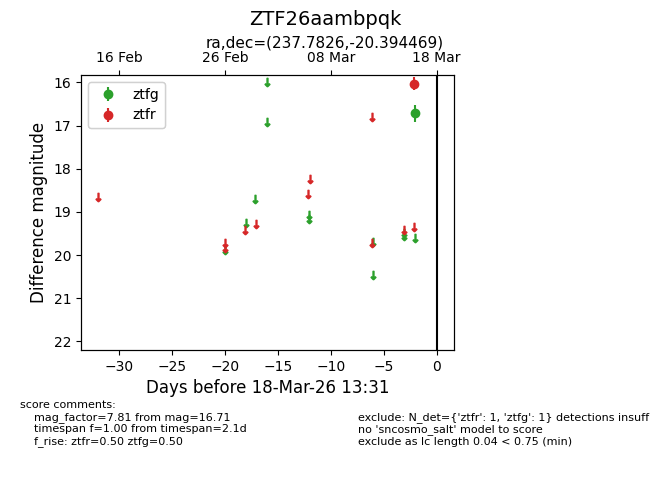
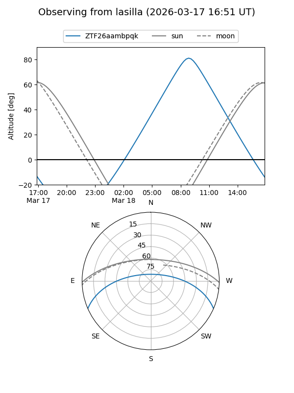
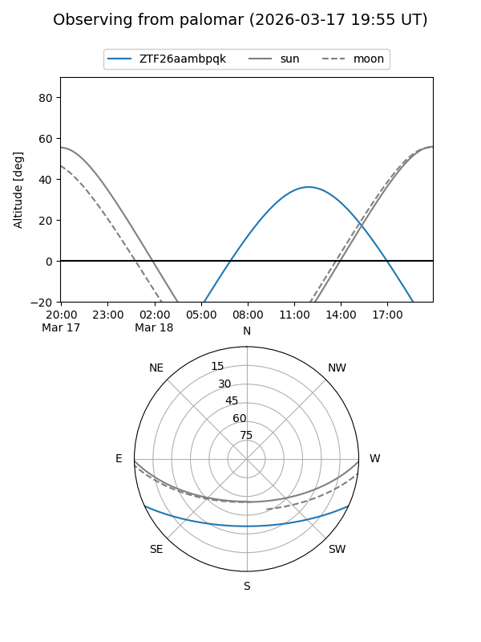

ZTF26aambpqk
Target ZTF26aambpqk at 2026-03-18 13:33
Aliases and brokers:
FINK: link
Lasair: link
ALeRCE: link
alt names
ZTF26aambpqk (ztf,fink_ztf)
Coordinates:
equatorial (ra, dec) = 237.7826,-20.39447
equatorial (HMS+DMS) = 15:51:07.82,-20:23:40.09
galactic (l, b) = (350.1390,+25.57915)
Flags:
Photometry:
last ztfg=16.71, ztfr=16.03
1 ztfg, 1 ztfr detections
Lightcurve

Visibility


Additional plots